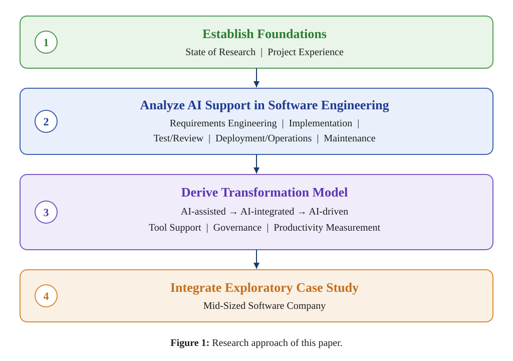

Аннотация
Генеративный ИИ всё больше преобразует разработку программного обеспечения: она перестаёт быть только локальной инструментальной поддержкой и становится формой работы, глубже встроенной в процессы, инструменты и организационные структуры.
Применение ИИ больше не ограничивается автодополнением кода. Оно затрагивает требования, архитектуру, реализацию, тестирование, ревью, эксплуатацию и сопровождение. Существующие исследования дают неоднородную картину: рост производительности возможен, но сильно зависит от типа задачи, характеристик кодовой базы и уровня опыта разработчиков.
Одновременно артефакты, создаваемые ИИ, требуют дополнительных механизмов контроля и управления. Поэтому авторы предлагают прагматичную организационную рамку для перехода к разработке ПО с опорой на ИИ.
Эта рамка описывает движение от неформального и вспомогательного использования ИИ через интегрированные ИИ-процессы к контролируемым агентным процессам разработки. В фокусе не оценка отдельных инструментов или моделей, а то, как ИИ можно встроить технически, организационно и через механизмы обеспечения качества во все ключевые виды деятельности разработки ПО.
Особое значение уделяется обвязке процесса: она связывает контекст проекта, доступ к инструментам, механизмы верификации, права доступа, журналирование и участие человека в утверждении решений.
1. Введение
Достижения генеративного ИИ меняют то, как программное обеспечение создаётся, тестируется, документируется и эксплуатируется. В организациях, где ПО является критически важным активом, это поднимает вопросы не только о выборе подходящих инструментов, но и о том, как встраивать их в процессы разработки.
Работа рассматривает эти изменения через понятие разработки ПО с опорой на ИИ как общей перспективы использования искусственного интеллекта на протяжении всего жизненного цикла разработки ПО.
Авторы подчёркивают: речь идёт не о простой замене отдельных действий разработчика. ИИ начинает влиять на весь контур инженерии: от формулирования требований и проектирования архитектуры до тестирования, ревью, сопровождения и эксплуатации.
Именно поэтому переход к агентным процессам требует не только модели, но и управляемой среды: проектного контекста, прав доступа, журналирования действий, запуска проверок, верификации результата и точек человеческого одобрения.
2. Организационная рамка перехода
Авторы описывают переход к разработке ПО с опорой на ИИ как последовательное движение через несколько уровней зрелости.
Первый уровень - вспомогательное использование ИИ. На этом этапе разработчики применяют ИИ локально: для подсказок, генерации фрагментов кода, объяснения ошибок или подготовки черновиков тестов. Такой подход может ускорять отдельные действия, но слабо встроен в общий инженерный процесс.
Второй уровень - интегрированные ИИ-процессы. Здесь ИИ подключается к существующим инструментам и этапам разработки: задачам, репозиториям, тестам, ревью, документации и сборке. Польза становится более устойчивой, но возникает потребность в правилах, проверках и ответственности.
Третий уровень - контролируемые агентные процессы. На этом уровне ИИ-агенты могут выполнять более длинные цепочки действий: анализировать контекст, менять код, запускать проверки, собирать обратную связь и предлагать результат человеку. Ключевое условие - не автономность сама по себе, а управляемость, проверяемость и безопасность процесса.
3. Почему нужна обвязка агентного процесса
Особое место в статье занимает понятие обвязки. Это технический и организационный слой, который соединяет ИИ-агента с реальным проектом и делает его действия проверяемыми.
Такая обвязка должна включать проектный контекст, доступ к инструментам, механизмы верификации, управление правами, журналирование действий и участие человека в принятии решений. Без неё ИИ остаётся внешним помощником, который может сгенерировать полезный текст или код, но не становится частью надёжного инженерного процесса.
Для корпоративной разработки это особенно важно. В больших кодовых базах результат нельзя оценивать только по тому, что модель уверенно сгенерировала ответ. Нужно понимать, какие файлы были затронуты, какие зависимости изменились, какие тесты запускались, какие проверки прошли и кто подтвердил итоговое изменение.
4. Кейс и практическая значимость
Для обоснования рамки авторы используют исследовательский кейс компании-разработчика среднего размера. Этот пример помогает оценить правдоподобность предложенного подхода и показать, как технические предпосылки, требования управления, проектные практики и пути трансформации формируются в конкретном организационном контексте.
Работа опирается на современную исследовательскую литературу, практико-ориентированные источники, устоявшиеся практики разработки ПО и проектный опыт. В результате статья предлагает не готовую универсальную методику внедрения, а концептуальную основу для дальнейшего обсуждения и эмпирического изучения разработки ПО с опорой на ИИ.
Кейс Veai. Именно эту «обвязку» Veai реализует на практике внутри JetBrains IDE: агент получает контекст проекта (зависимости, структуру кода, сборку), работает в границах выданных прав, запускает тесты и проверки, а результат проходит через верификацию и точку человеческого одобрения.
Такой подход превращает описанную в статье рамку в рабочий процесс: команда принимает ИИ-изменение не по «красивому объяснению» модели, а по проверяемым фактам IDE — результатам сборки, тестов, статического анализа и поведения приложения в рантайме.
Ключевые термины
Разработка ПО с опорой на ИИ - использование искусственного интеллекта на разных этапах жизненного цикла разработки: от требований и архитектуры до тестирования, ревью и эксплуатации.
Агентный процесс разработки - управляемая цепочка действий, где ИИ-агент работает с контекстом проекта, инструментами и проверками, а человек сохраняет контроль над критичными решениями.
Обвязка агентного процесса - слой контроля, который связывает контекст проекта, доступ к инструментам, запуск проверок, права, журналирование и человеческое одобрение.
Дать разработчикам чат с моделью - это не ИИ-трансформация, а риск без контура контроля.
Статья хорошо формулирует, что агентная разработка требует обвязки: контекста проекта, прав, журналирования, запуска, тестов и верификации. Veai работает внутри JetBrains IDE и опирается на проверяемые артефакты проекта, поэтому CTO получает не магию генерации, а управляемый процесс качества.
Перевод подготовлен технической командой Veai на основе arXiv:2606.15283. Первоисточник (англ.): arxiv.org/abs/2606.15283.